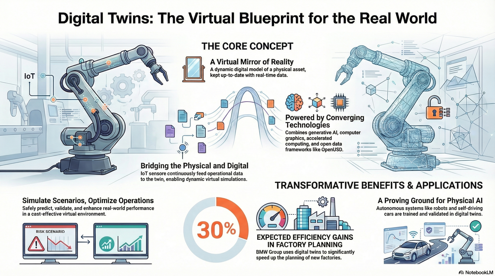

Digital Twins
Live virtual representations of physical products, facilities, or processes that stay aligned with real-world data. The core idea is to combine 3D structure, operational telemetry, simulation, and visualization so teams can plan, validate, and optimize decisions in software before applying them to the physical system.
What Makes a Twin Different
A digital twin is more than a 3D model. The important shift is from static visualization to a living model that can answer "what happens if we change this?"
- It mirrors a real asset, process, or environment
- It can ingest real-time or historical data from sensors and enterprise systems
- It supports simulation, analysis, and operational decision-making
The data loop is continuous: physical systems feed data into the twin, the twin enables simulation and analysis, and decisions flow back to the physical world. Static 3D models are not twins — the live data connection is what makes the difference.


Enabling Technologies
Four ingredients show up repeatedly in production digital twin implementations:
| Technology | Role in the twin |
|---|---|
| OpenUSD | Unifies CAD, BIM, scanned geometry, metadata, and IoT-linked assets into one composable scene |
| Computer graphics | Physically grounded rendering, lighting, and simulation — the twin must look and behave like the real thing |
| Accelerated computing | Industrial-scale visualization and physics require GPU-accelerated rendering and simulation |
| Generative AI | Synthetic data, natural-language interfaces, and faster interaction with complex systems |
Design to Operations: Twin Phases
A typical digital twin lifecycle for a manufacturing facility flows through three major phases:
Data Ingestion & Scene Assembly
Ingest layout and equipment data from many upstream tools (CAD, BIM, 3D scan, process simulation). Compose them into a shared USD scene with adjustment layers and payloads. Different teams and suppliers each own their layer.
Validation & Optimization
Use the twin for planning, review, and simulation. Test layout changes, robot trajectories, material flow, and safety scenarios in software before committing physical resources. Train AI models using synthetic data from the twin.
Live Monitoring & Continuous Improvement
Connect live sensor data, production telemetry, and enterprise systems to the running twin. Monitor OEE, detect anomalies, and validate changes before deploying them to the floor. The twin becomes the operational system of record for the facility.
Common Use Cases
- Factory planning and material-flow optimization — test layout, routing, and throughput changes before physical rearrangement
- Robotics training and validation — generate synthetic data and test robot policies before real deployment
- Optical inspection and defect detection — train vision models on perfect, annotated synthetic data from the twin
- Smart-city planning and traffic simulation — model pedestrian flow, traffic routing, and infrastructure changes
- Data center modeling — simulate energy, cooling, and workload distribution; optimize efficiency without physical experimentation
The business case is consistent: one environment supports design review, process simulation, and production operations instead of separate disconnected tools. The twin provides a single source of truth that all stakeholders can query.